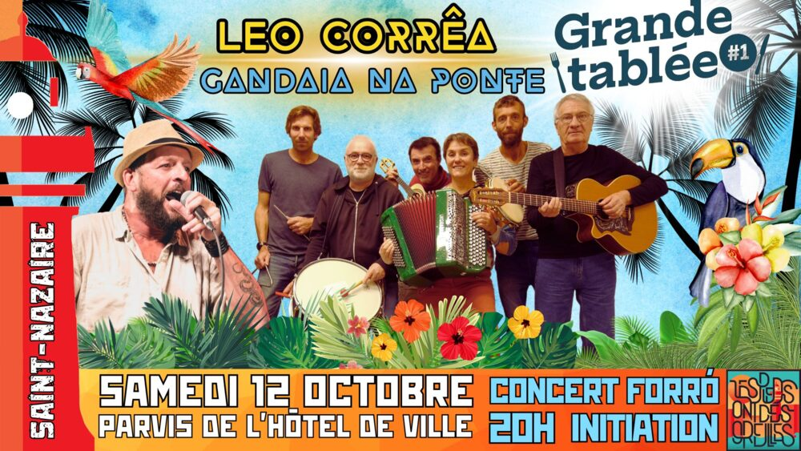

Concert de Léo Corrêa et Gandaia na Ponte à la Grande Tablée

Lieu : Devant l'hôtel de ville, Saint-Nazaire
La Grande Tablée est une grande journée de festivité devant l'hôtel de ville : animations des associations et banquet convivial.
Pour clôturer la journée, concert forró avec Gandaia na Ponte augmenté de Léo Corrêa. Initiation à la danse et concert de 20h15 à 22h.